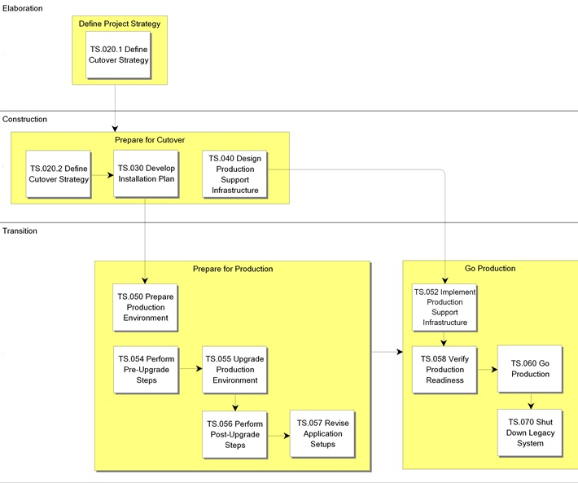

OUM |
Process Overview |
||
Method Navigation |
Current Page Navigation |
||
|
|
||||||||
The goal of the Transition process is to install the solution (which includes providing installation procedures) and then take it into production. It begins early in the project by defining the specific requirements for cutover to the new application system. It then includes tasks to carry out the elements of that strategy such as developing an Installation Plan, preparing the Production Environment, performing the cutover, and decommissioning any legacy systems. Legacy system decommissioning is performed when a legacy system exists that is being replaced by the new solution that is now in production.
 This process overview is written from the perspective of a Full Method View, utilizing ALL of the activities and tasks in this process. Therefore, all of the following sections provide comprehensive information. If your project is utilizing a tailored approach (for example, Technology Full Lifecycle View, Application Implementation View, Middleware Architecture View), not everything in this overview may be appropriate for your project. Please keep this in mind, especially when reviewing the Key Work Products and Tasks and Work Products sections. You should use OUM as a guideline for performing all types of information technology projects, but keep in mind that every project is different and that you need to adjust project activities according to each situation. Do not hesitate to add, remove, or rearrange tasks, but be sure to reflect these changes in your estimates and risk management planning. You should also consider the depth to which you address and complete each task based on the characteristics of your particular project or project increment. See Oracle's Full Lifecycle Method for Deploying Oracle-Based Business Solutions for further information on the scalability and adaptability of OUM.
This process overview is written from the perspective of a Full Method View, utilizing ALL of the activities and tasks in this process. Therefore, all of the following sections provide comprehensive information. If your project is utilizing a tailored approach (for example, Technology Full Lifecycle View, Application Implementation View, Middleware Architecture View), not everything in this overview may be appropriate for your project. Please keep this in mind, especially when reviewing the Key Work Products and Tasks and Work Products sections. You should use OUM as a guideline for performing all types of information technology projects, but keep in mind that every project is different and that you need to adjust project activities according to each situation. Do not hesitate to add, remove, or rearrange tasks, but be sure to reflect these changes in your estimates and risk management planning. You should also consider the depth to which you address and complete each task based on the characteristics of your particular project or project increment. See Oracle's Full Lifecycle Method for Deploying Oracle-Based Business Solutions for further information on the scalability and adaptability of OUM.
This process flow for this process follows:

During the Transition process, we focus on installing the solution (which includes providing installation procedures) and then going production. It begins early in the project by defining the specific requirements for cutover (TS.020.1 and TS.020.2) to the new application system. It then includes tasks to carry out the elements of that strategy such as developing an Installation Plan (TS.030), preparing the Production Environment (TS.050), performing the cutover (TS.060), and decommissioning any legacy systems (TS.070).
In a project using the OUM approach, the business organization becomes familiar with, and progressively accepts, the new system as it is developed. Transfer of knowledge about the system to the business staff is an integrated part of the development process. The Transition team should involve the same ambassador users who have been involved from the start.
The Production/Hosting Environment (TS.050), which is designed in the Technical Architecture process, is constructed as part of the Transition process. This includes installation and configuration of all servers, network hardware, operating systems, test and monitoring systems in time to accommodate launching of the new system on the Internet.
The Transition process has the following requirements in the period before production starts:
When an existing system is being replaced, there are three techniques for going production.
In the phased technique, partitions of the new system enter production use one at a time, while the legacy system's corresponding subsystems are shutdown in the same sequence. This allows for a gradual move to the new system causing disruption in fewer internal user groups at once. This is not common but may be appropriate for some solutions which have clearly-defined partitions that are not interdependent. This approach can also allow newly-trained users to use their part of the system while other users are still being trained. A downside to this technique is that you may need to develop temporary solutions to make the old and new parts work together as a whole.
In the parallel technique for going production, the new system goes production while the old system is still running. This is not a common approach for Internet solutions that replace another Internet solution as it would be very difficult to keep two different stores running simultaneously, particularly at the same URL. However, for other types of replacements, this might be an option. The users use both systems at once. This can cause consistency problems if data is not consistently entered in both systems. However, running the legacy system in a read-only mode is a common practice. This also contributes to lowering risk as there is a backup option available if something should go wrong.
Another parallel option is to pick a single user, a group of users or a few officers to be a pilot for the new system, while other groups still use the old system. This may be a good option when there is a large number of user groups that work as separate units. This may also be a benefit when converting data as you may not need to convert all data immediately, only the data that is relevant for that user group. A downside of this method is that you may need to build new interfaces between the old and the new system, similar to the phased technique.
With the replacement technique, the legacy system is shut down when the new system goes production. This saves resources since you do not need both the new and old systems at the same time. This is riskier than the other two options because it means that you do not have access to the old system if anything should go wrong. The Cutover Strategy could provide for a series of test launches where the new system replaces the old for short periods of time.
The type of rollout that you plan affects the design of the data conversion programs. A phased rollout requires data to be converted in steps — a different problem than converting all data at once. If the Cutover Strategy is not stable, it is better to proceed with a phased Transition approach, either by business unit or geographical location. This approach still leaves open the possibility of a replacement rollout.
The tasks and work products for this process are as follows:
| ID | Task | Work Product |
|---|---|---|
Elaboration Phase |
||
TS.020.1 |
Define Cutover Strategy | Cutover Strategy |
Construction Phase |
||
TS.020.2 |
Define Cutover Strategy | Cutover Strategy |
TS.030 |
Develop Installation Plan | Installation Plan |
TS.040 |
Design Production Support Infrastructure | Production Support Infrastructure Design |
Transition Phase |
||
TS.050 |
Prepare Production Environment | Production Environment |
TS.052 |
Implement Production Support Infrastructure | Production Support Infrastructure |
TS.054 |
Perform Pre-Upgrade Steps | Pre-Upgrade Checklist |
TS.055 |
Upgrade Production Environment | Upgraded Production Environment |
TS.056 |
Perform Post-Upgrade Steps | Post-Upgrade Checklist |
TS.057 |
Revise Application Setups | Configured Applications |
TS.058 |
Verify Production Readiness | Production-Ready System |
TS.060 |
Go Production | System In Production |
TS.070 |
Shut Down Legacy System | Legacy System Shut Down |
The objectives of the Transition process are:
Refer to Key Work Products for a complete list of key work products in OUM.
The following roles are required to perform the tasks within this process:
| Role ID | Name | Responsibility |
|---|---|---|
Implementing Organization |
||
| BA | Business Analyst | For application implementations, you may need a business analyst to set up and configure the application software. If not doing an application implementation, you may not need a business analyst and you can allocate this effort equally to the system administrator, database administrator and system architect. |
| DBA | Database Administrator | Define installation procedures for installing the database and set up and configure the production database. Ensure that all users have proper access to the database. |
| DV | Developer | Define installation procedures for installing the application software. |
| QM | Quality Manager | |
| SAD | System Administrator | Install and configure system software, tools and application code. Coordinate and manage the Go Production effort and decommission the existing system. |
| SAN | System Analyst | Define Cutover Strategy, identify resources, and plan for cutover. Gain information from users, technical and managerial staff and prepares the Cutover Strategy. |
| SA | System Architect | Review installation procedures and provide input. Set up and configure the production application server and ensure that all users have proper access to the application server. Coordinate and manage any offshore Go Production effort. Decommission any offshore existing system. |
| TE | Tester | |
| TRS | Training Specialist | |
Customer (User) |
||
| BLM | Business Line Manager | Provide information for the Cutover Strategy. |
| CPM | Customer Project Manager | Provide information for the Cutover Strategy. Review possible cutover techniques and resource requirements. Ensure availability and commitment of personnel, and the availability of hardware, software and facilities. |
| CSM | Customer Staff Member | |
| ISM | IS Manager | |
| OS | IS Operations Staff | Define installation procedures for installing hardware and system software and install and configure hardware, network, etc. |
| SS | IS Support Staff | Provide information for the Cutover Strategy. Start providing production support for the new application system. |
| USR | User | Provide information throughout the process. Use the new application system. |
The critical success factors of this process are as follows:

Copyright © 2006, 2016, Oracle and/or its affiliates. All rights reserved.